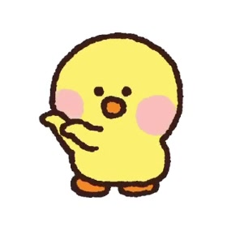
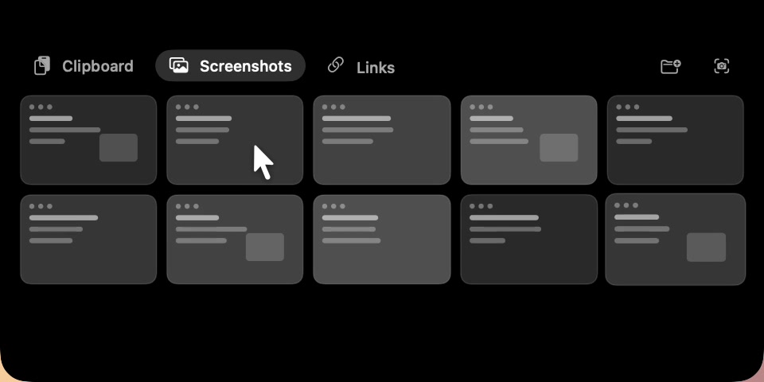
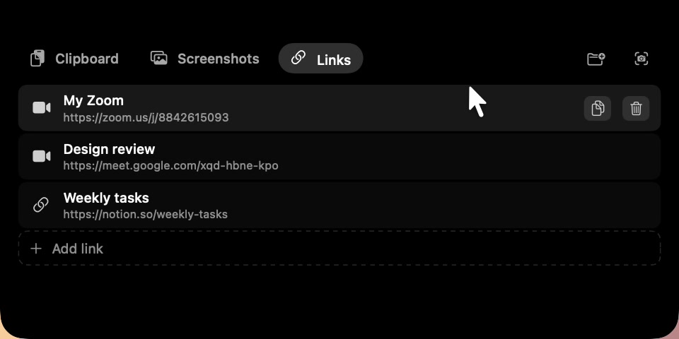

The avatar pops out from under the notch and waves. Nine files on the desktop set up the tidy-up later.
seam out: morphWhat the notch can do, one function per beat: Clipboard, Screenshots, Links, Tidy desktop, Claude is waiting. The duck is a small avatar beside the notch that hops on every change.

The avatar pops out from under the notch and waves. Nine files on the desktop set up the tidy-up later.
seam out: morph
The notch opens into a wide panel with the clipboard history; the label rises bottom-left; the avatar rides the panel's corner and hops.
seam out: slide left
Content slides left to the next tab, in place; the old word leaves upward as the new one comes in from below.
seam out: slide left
Third tab, same move — the rhythm of switching tabs: Zoom, Meet and Notion links.
seam out: morphThe panel folds back and the files fly in arcs into the dated folder, which bumps on each landing. The avatar turns into the proud duck for a moment.
seam out: morphA dot on the notch pulses orange twice, then turns green. Held ~1 s, then a cut back to 01.
seam out: cut → 01 (loop)One black shape carries the film; the avatar never leaves its side.